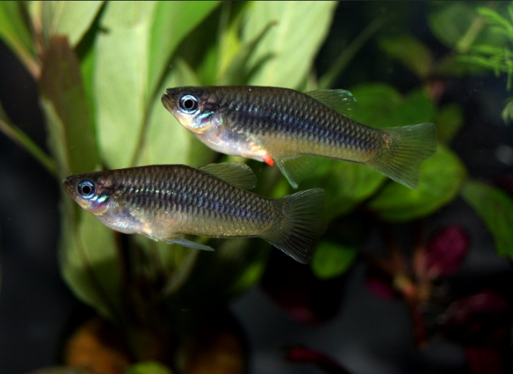
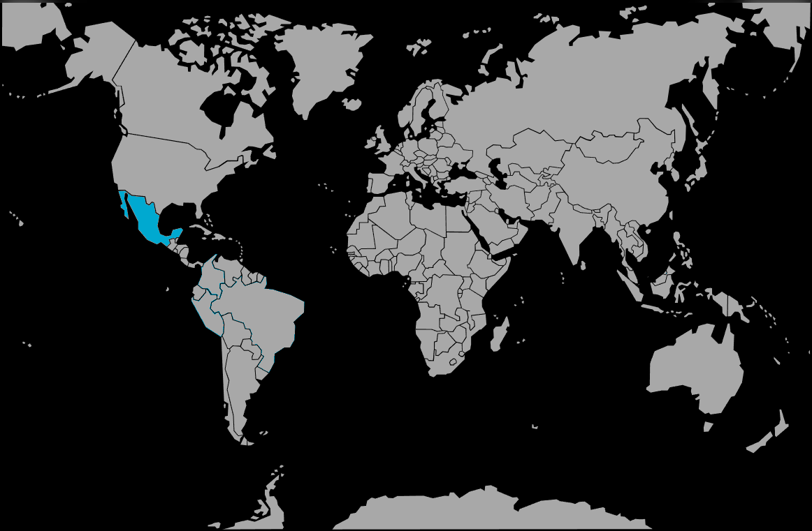

Systématique
- Ordre : Cyprinodontiformes
- Famille : Poeciliidae
- Genre : Priapella
- Espèce : Priapella intermedia
- Descripteur : Álvarez & Carranza, 1952

Priapella intermedia est un petit vivipare d'Amérique centrale originaire des eaux claires et rapides du Rio Coatzacoalcos au Mexique. Le mâle mesure environ 4 à 5 cm, tandis que la femelle atteint 7 cm.
L'espèce se caractérise par une livrée argentée brillante, avec une teinte bleutée et des yeux très lumineux. Les nageoires dorsale, anale et caudale affichent des reflets orangés. C'est une espèce caractérisée par un dynamisme constant et une grande agilité de nage.
Priapella intermedia est un poisson actif, constamment en mouvement et bon nageur. Il vit naturellement en petits groupes et doit être maintenu en groupe de 12 à 15 individus minimum pour exprimer pleinement son potentiel esthétique.
L'espèce tolère quelques poissons paisibles de taille comparable, mais nécessite une maintenance attentive et une eau bien brassée et oxygénée. Elle est sensible aux mauvaises conditions d'eau et aux changements brusques de paramètres.
Mode : ovovivipare; la femelle donne naissance à des alevins vivants après une gestation.
La reproduction est facilitée par une température légèrement élevée (26 à 28 °C) et une eau bien oxygénée. Les jeunes naissent indépendants et capables de se nourrir immédiatement. L'espèce se reproduit facilement en aquarium si les paramètres sont optimaux.
Dimorphisme sexuel : le mâle est plus fin et coloré, tandis que la femelle est plus trapue et plus grande avec un ventre arrondi.
Espérance de vie : environ 3 à 4 ans en captivité.
Priapella intermedia fréquente les eaux claires et rapides du bassin Coatzacoalcos au Mexique. Le biotope est caractérisé par un courant modéré à fort, une bonne oxygénation naturelle et un substrat rocheux ou graveleux. L'eau est légèrement alcaline et de dureté moyenne.
Répartition

Origine naturelle :
- Rio Coatzacoalcos, région sud du Mexique.
- Eaux claires et rapides d'Amérique centrale.
- Endémique à cette région.
Paramètres de maintenance
Température : 20 à 28 °C, optimale autour de 24–27 °C.
pH : 7,0 à 8,0, eau légèrement alcaline à alcaline.
GH : 12 à 20 °dGH, eau dure.
Volume conseillé : minimum 100 à 150 L pour un groupe de 12 à 15 individus.
Courant : modéré à fort, avec une bonne oxygénation et un brassage important. Une pompe de circulation est essentielle.
Décoration : roches et graviers, peu de plantes. Renouvellements d'eau fréquents (20% par semaine).
Régime alimentaire
Régime : insectivore; se nourrit d'insectes aquatiques et tombant à la surface en nature.
En aquarium, accepte facilement flocons, granulés, aliments surgelés et vivants (petits insectes, daphnies, artémias). Une alimentation variée maintient ses couleurs brillantes.
Le poisson chassera volontiers les petits insectes terrestres à la surface.